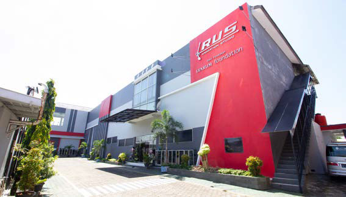

Smk Raden umar said kudus Adalah sekolah kejuruan animasi yang terletak di
kabupaten kudus, provinsi jawa Tengah.
Sekolah ini di kenal dengan jurusan kreatifnya seperti animasi, PPLG, DKV.
Sekolah ini menyediakan fasilitas yang modern dan juga mendukung kegiatan siswa dalam belajar, dan juga banyak sekolah ini berkerja sama dengan perusahaan besar seperti PT Djarum Foundation, Rus Animation, Rans Animation, dan masih banyak lagi. Kurikulum yang diterapkan di SMK Raden Umar Said Kudus berbeda dengan sekolah lain. Di sekolah ini, kurikulum disusun agar siswa tidak hanya pintar secara teori, tetapi juga terampil dan siap menghadapi dunia kerja. Sistem pembelajaran menekankan kerja sama, kreativitas, serta keterampilan praktis yang relevan dengan kebutuhan industri animasi dan teknologi. Selain itu, lingkungan sekolah juga suasananya sejuk karena terdapat banyak taman dan pepohonan yang membuat suasana terasa sejuk. Lapangan sekolah cukup luas dan sering digunakan untuk olahraga maupun upacara. Siswa juga dapat mengikuti berbagai kegiatan ekstrakurikuler seperti Pramuka, basket, dan teater yang menambah pengalaman belajar di luar kelas.
Dengan segala fasilitas, jurusan kreatif, dan kurikulum yang dimilikinya, SMK Raden Umar Said Kudus menjadi sekolah yang tepat bagi siswa yang ingin mengembangkan bakat di bidang animasi, desain, maupun teknologi.